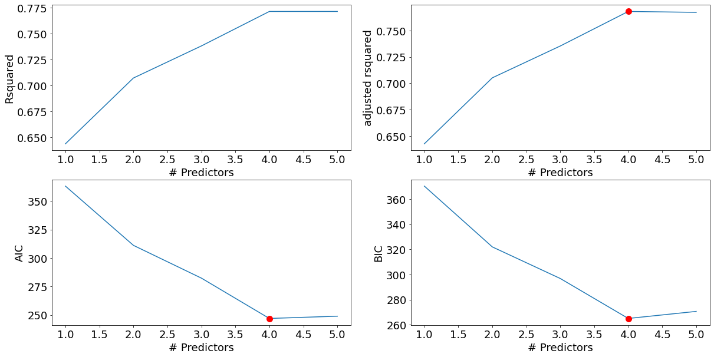
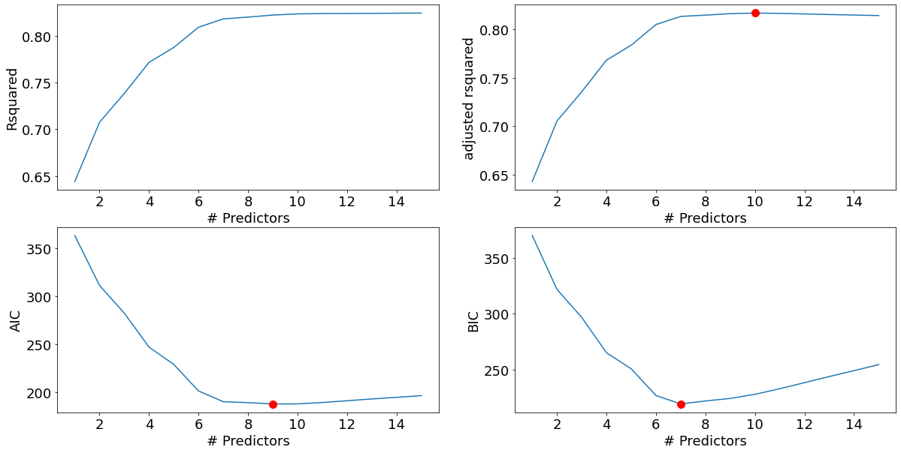
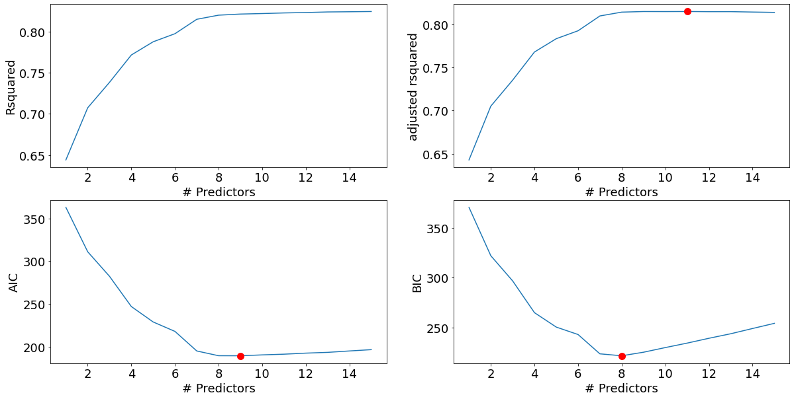
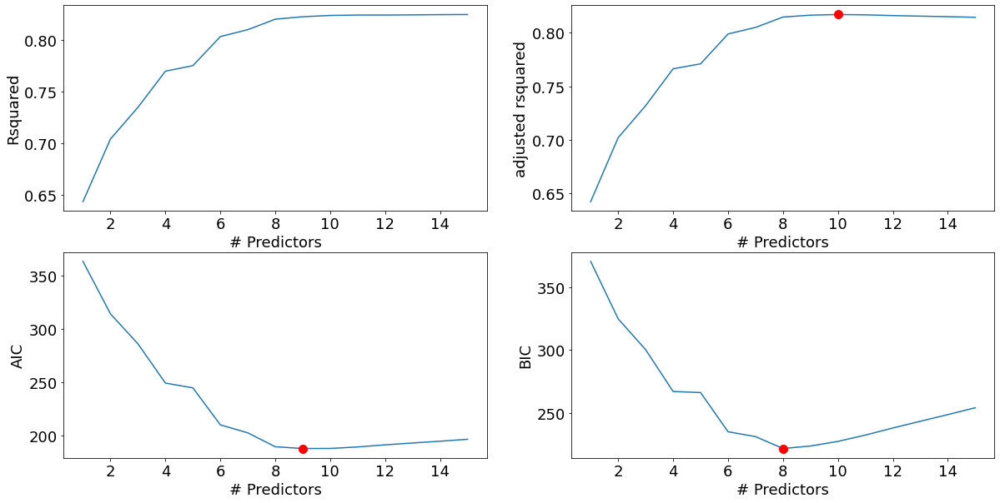

import pandas as pd
import numpy as np
import statsmodels.formula.api as sm
import seaborn as sns
import matplotlib.pyplot as plt
import itertools
import time8 Best subset and Stepwise selection
Read section 6.1 of the book before using these notes.
Note that in this course, lecture notes are not sufficient, you must read the book for better understanding. Lecture notes are just implementing the concepts of the book on a dataset, but not explaining the concepts elaborately.
8.1 Best subsets selection
trainf = pd.read_csv('./Datasets/house_feature_train.csv')
trainp = pd.read_csv('./Datasets/house_price_train.csv')
testf = pd.read_csv('./Datasets/house_feature_test.csv')
testp = pd.read_csv('./Datasets/house_price_test.csv')
train = pd.merge(trainf,trainp)
test = pd.merge(testf,testp)
train.head()| house_id | house_age | distance_MRT | number_convenience_stores | latitude | longitude | house_price | |
|---|---|---|---|---|---|---|---|
| 0 | 210 | 5.2 | 390.5684 | 5 | 24.97937 | 121.54245 | 2724.84 |
| 1 | 190 | 35.3 | 616.5735 | 8 | 24.97945 | 121.53642 | 1789.29 |
| 2 | 328 | 15.9 | 1497.7130 | 3 | 24.97003 | 121.51696 | 556.96 |
| 3 | 5 | 7.1 | 2175.0300 | 3 | 24.96305 | 121.51254 | 1030.41 |
| 4 | 412 | 8.1 | 104.8101 | 5 | 24.96674 | 121.54067 | 2756.25 |
Develop a model to predict house price using the rest of the columns as predictors (except house_id).
#Model with log house price as the response and the remaining variables as predictors
model = sm.ols('np.log(house_price)~house_age+distance_MRT+number_convenience_stores+latitude+\
longitude', data = train).fit()
model.summary()| Dep. Variable: | np.log(house_price) | R-squared: | 0.772 |
|---|---|---|---|
| Model: | OLS | Adj. R-squared: | 0.767 |
| Method: | Least Squares | F-statistic: | 181.8 |
| Date: | Thu, 16 Feb 2023 | Prob (F-statistic): | 4.47e-84 |
| Time: | 18:31:07 | Log-Likelihood: | -118.47 |
| No. Observations: | 275 | AIC: | 248.9 |
| Df Residuals: | 269 | BIC: | 270.6 |
| Df Model: | 5 | ||
| Covariance Type: | nonrobust |
| coef | std err | t | P>|t| | [0.025 | 0.975] | |
|---|---|---|---|---|---|---|
| Intercept | -482.9401 | 312.000 | -1.548 | 0.123 | -1097.212 | 131.332 |
| house_age | -0.0131 | 0.002 | -6.437 | 0.000 | -0.017 | -0.009 |
| distance_MRT | -0.0003 | 3.69e-05 | -8.318 | 0.000 | -0.000 | -0.000 |
| number_convenience_stores | 0.0598 | 0.010 | 6.247 | 0.000 | 0.041 | 0.079 |
| latitude | 18.7044 | 2.353 | 7.951 | 0.000 | 14.073 | 23.336 |
| longitude | 0.1923 | 2.465 | 0.078 | 0.938 | -4.660 | 5.045 |
| Omnibus: | 4.413 | Durbin-Watson: | 2.260 |
|---|---|---|---|
| Prob(Omnibus): | 0.110 | Jarque-Bera (JB): | 5.515 |
| Skew: | 0.077 | Prob(JB): | 0.0634 |
| Kurtosis: | 3.677 | Cond. No. | 2.28e+07 |
Notes:
[1] Standard Errors assume that the covariance matrix of the errors is correctly specified.
[2] The condition number is large, 2.28e+07. This might indicate that there are
strong multicollinearity or other numerical problems.
Find the best subset of predictors that can predict house price in a linear regression model.
#Creating a set of predictors from which we need to find the best subset of predictors
X = train[['house_age','number_convenience_stores','latitude', 'longitude','distance_MRT']]8.1.1 Best subset selection algorithm
Now, we will implement the algorithm of finding the best subset of predictors from amongst all sets of predictors.
#Function to develop a model based on all predictors in predictor_subset
def processSubset(predictor_subset):
# Fit model on feature_set and calculate R-squared
model = sm.ols('np.log(house_price)~' + '+'.join(predictor_subset),data = train).fit()
Rsquared = model.rsquared
return {"model":model, "Rsquared":Rsquared}#Function to select the best model amongst all models with 'k' predictors
def getBest_model(k):
tic = time.time()
results = []
for combo in itertools.combinations(X.columns, k):
results.append(processSubset((list(combo))))
# Wrap everything up in a dataframe
models = pd.DataFrame(results)
# Choose the model with the highest RSS
best_model = models.loc[models['Rsquared'].argmax()]
toc = time.time()
print("Processed", models.shape[0], "models on", k, "predictors in", (toc-tic), "seconds.")
return best_model#Function to select the best model amongst the best models for 'k' predictors, where k = 1,2,3,..
models_best = pd.DataFrame(columns=["Rsquared", "model"])
tic = time.time()
for i in range(1,1+X.shape[1]):
models_best.loc[i] = getBest_model(i)
toc = time.time()
print("Total elapsed time:", (toc-tic), "seconds.")Processed 5 models on 1 predictors in 0.02393651008605957 seconds.
Processed 10 models on 2 predictors in 0.04688239097595215 seconds.
Processed 10 models on 3 predictors in 0.04986691474914551 seconds.
Processed 5 models on 4 predictors in 0.029920578002929688 seconds.
Processed 1 models on 5 predictors in 0.008975982666015625 seconds.
Total elapsed time: 0.17253828048706055 seconds.def best_sub_plots():
plt.figure(figsize=(20,10))
plt.rcParams.update({'font.size': 18, 'lines.markersize': 10})
# Set up a 2x2 grid so we can look at 4 plots at once
plt.subplot(2, 2, 1)
# We will now plot a red dot to indicate the model with the largest adjusted R^2 statistic.
# The argmax() function can be used to identify the location of the maximum point of a vector
plt.plot(models_best["Rsquared"])
plt.xlabel('# Predictors')
plt.ylabel('Rsquared')
# We will now plot a red dot to indicate the model with the largest adjusted R^2 statistic.
# The argmax() function can be used to identify the location of the maximum point of a vector
rsquared_adj = models_best.apply(lambda row: row[1].rsquared_adj, axis=1)
plt.subplot(2, 2, 2)
plt.plot(rsquared_adj)
plt.plot(1+rsquared_adj.argmax(), rsquared_adj.max(), "or")
plt.xlabel('# Predictors')
plt.ylabel('adjusted rsquared')
# We'll do the same for AIC and BIC, this time looking for the models with the SMALLEST statistic
aic = models_best.apply(lambda row: row[1].aic, axis=1)
plt.subplot(2, 2, 3)
plt.plot(aic)
plt.plot(1+aic.argmin(), aic.min(), "or")
plt.xlabel('# Predictors')
plt.ylabel('AIC')
bic = models_best.apply(lambda row: row[1].bic, axis=1)
plt.subplot(2, 2, 4)
plt.plot(bic)
plt.plot(1+bic.argmin(), bic.min(), "or")
plt.xlabel('# Predictors')
plt.ylabel('BIC')
best_sub_plots()
The model with 4 predictors is the best model, according to all 3 criteria - Adjusted R-squared, AIC and BIC.
Note that we have not considered the null model (i.e., the model with only the intercept and no predictors) explicitly in the best subsets algorithm. However, the null model is considered when selecting the best model. The R-squared and the adjusted R-squared for the null model is 0. So, if the adjusted R-squared of all the models with at least one predictor is negative, then the null model will be the best model.
best_subset_model = models_best.loc[4,'model']
models_best.loc[4,'model'].summary()| Dep. Variable: | np.log(house_price) | R-squared: | 0.772 |
|---|---|---|---|
| Model: | OLS | Adj. R-squared: | 0.768 |
| Method: | Least Squares | F-statistic: | 228.0 |
| Date: | Thu, 16 Feb 2023 | Prob (F-statistic): | 2.79e-85 |
| Time: | 19:51:50 | Log-Likelihood: | -118.47 |
| No. Observations: | 275 | AIC: | 246.9 |
| Df Residuals: | 270 | BIC: | 265.0 |
| Df Model: | 4 | ||
| Covariance Type: | nonrobust |
| coef | std err | t | P>|t| | [0.025 | 0.975] | |
|---|---|---|---|---|---|---|
| Intercept | -459.0262 | 58.231 | -7.883 | 0.000 | -573.671 | -344.381 |
| house_age | -0.0131 | 0.002 | -6.451 | 0.000 | -0.017 | -0.009 |
| number_convenience_stores | 0.0597 | 0.010 | 6.271 | 0.000 | 0.041 | 0.078 |
| latitude | 18.6828 | 2.332 | 8.012 | 0.000 | 14.092 | 23.274 |
| distance_MRT | -0.0003 | 2.53e-05 | -12.221 | 0.000 | -0.000 | -0.000 |
| Omnibus: | 4.422 | Durbin-Watson: | 2.261 |
|---|---|---|---|
| Prob(Omnibus): | 0.110 | Jarque-Bera (JB): | 5.555 |
| Skew: | 0.073 | Prob(JB): | 0.0622 |
| Kurtosis: | 3.681 | Cond. No. | 4.25e+06 |
Notes:
[1] Standard Errors assume that the covariance matrix of the errors is correctly specified.
[2] The condition number is large, 4.25e+06. This might indicate that there are
strong multicollinearity or other numerical problems.
#Finding the RMSE of the model selected using the best subset selection procedure
pred_price = np.exp(best_subset_model.predict(test))
np.sqrt(((pred_price - test.house_price)**2).mean())403.4635674362065#RMSE of the model using all the predictors
model = sm.ols('np.log(house_price)~' + '+'.join(X.columns),data = train).fit()
pred_price = np.exp(model.predict(test))
np.sqrt(((pred_price - test.house_price)**2).mean())403.8409399214197The RMSE of the best subset model is similar to the RMSE of the model with all the predictors. This is because longitude varies only in [121.47, 121.57]. The coefficient of longitude is 0.1923 in the model with all the predictors. So, the change in the response due to longitude is in [23.36, 23.38 ]. This change in the response due to longitude is almost a constant, and hence is adjusted in the intercept of the model without longitude. Note the intercept of the model without longitude is 23.91 more than the intercept of the model with longitude.
[0.1923*train.longitude.min(),0.1923*train.longitude.max()][23.359359818999998, 23.377193721]8.1.2 Including interactions for best subset selection
Let’s perform best subset selection including all the predictors and their 2-factor interactions
#Creating a dataframe with all the predictors
X = train[['house_age', 'distance_MRT', 'number_convenience_stores','latitude','longitude']]
#Since 'X' will change when we include interactions, we need a backup containing all individual predictors
X_backup = train[['house_age', 'distance_MRT', 'number_convenience_stores','latitude','longitude']]#Including 2-factor interactions of predictors in train and 'X'. Note that we need train to develop the model, and X to
#find 'k' variable subsets from amongst all the predictors under consideration
for combo in itertools.combinations(X_backup.columns, 2):
train['_'.join(combo)] = train[combo[0]]*train[combo[1]]
test['_'.join(combo)] = test[combo[0]]*test[combo[1]]
X.loc[:,'_'.join(combo)] = train.loc[:,'_'.join(combo)] models_best = pd.DataFrame(columns=["Rsquared", "model"])
tic = time.time()
for i in range(1,1+X.shape[1]):
models_best.loc[i] = getBest_model(i)
toc = time.time()
print("Total elapsed time:", (toc-tic), "seconds.")Processed 15 models on 1 predictors in 0.07200050354003906 seconds.
Processed 105 models on 2 predictors in 0.536522388458252 seconds.
Processed 455 models on 3 predictors in 2.6639997959136963 seconds.
Processed 1365 models on 4 predictors in 9.176022052764893 seconds.
Processed 3003 models on 5 predictors in 24.184194803237915 seconds.
Processed 5005 models on 6 predictors in 43.54697918891907 seconds.
Processed 6435 models on 7 predictors in 65.83688187599182 seconds.
Processed 6435 models on 8 predictors in 78.97277760505676 seconds.
Processed 5005 models on 9 predictors in 64.53991365432739 seconds.
Processed 3003 models on 10 predictors in 38.39328980445862 seconds.
Processed 1365 models on 11 predictors in 18.715795755386353 seconds.
Processed 455 models on 12 predictors in 6.93279504776001 seconds.
Processed 105 models on 13 predictors in 1.6240253448486328 seconds.
Processed 15 models on 14 predictors in 0.256000280380249 seconds.
Processed 1 models on 15 predictors in 0.024001121520996094 seconds.
Total elapsed time: 356.2638840675354 seconds.best_sub_plots()
The model with 7 predictors is the best model based on the BIC criterion, and very close to the best model based on the AIC and Adjusted R-squared criteria. Let us select the model with 7 predictors.
best_interaction_model = models_best['model'][7]
best_interaction_model.summary()| Dep. Variable: | np.log(house_price) | R-squared: | 0.818 |
|---|---|---|---|
| Model: | OLS | Adj. R-squared: | 0.814 |
| Method: | Least Squares | F-statistic: | 171.7 |
| Date: | Thu, 16 Feb 2023 | Prob (F-statistic): | 5.29e-95 |
| Time: | 20:17:02 | Log-Likelihood: | -87.046 |
| No. Observations: | 275 | AIC: | 190.1 |
| Df Residuals: | 267 | BIC: | 219.0 |
| Df Model: | 7 | ||
| Covariance Type: | nonrobust |
| coef | std err | t | P>|t| | [0.025 | 0.975] | |
|---|---|---|---|---|---|---|
| Intercept | -1316.6156 | 135.152 | -9.742 | 0.000 | -1582.716 | -1050.515 |
| distance_MRT | 0.2424 | 0.044 | 5.539 | 0.000 | 0.156 | 0.329 |
| number_convenience_stores | 152.0179 | 23.356 | 6.509 | 0.000 | 106.033 | 198.003 |
| latitude | 53.0284 | 5.413 | 9.797 | 0.000 | 42.371 | 63.686 |
| house_age_longitude | -0.0001 | 1.51e-05 | -6.842 | 0.000 | -0.000 | -7.36e-05 |
| distance_MRT_number_convenience_stores | -5.691e-05 | 1.19e-05 | -4.763 | 0.000 | -8.04e-05 | -3.34e-05 |
| distance_MRT_latitude | -0.0097 | 0.002 | -5.544 | 0.000 | -0.013 | -0.006 |
| number_convenience_stores_latitude | -6.0847 | 0.935 | -6.506 | 0.000 | -7.926 | -4.243 |
| Omnibus: | 5.350 | Durbin-Watson: | 2.136 |
|---|---|---|---|
| Prob(Omnibus): | 0.069 | Jarque-Bera (JB): | 7.524 |
| Skew: | 0.045 | Prob(JB): | 0.0232 |
| Kurtosis: | 3.805 | Cond. No. | 2.78e+08 |
Notes:
[1] Standard Errors assume that the covariance matrix of the errors is correctly specified.
[2] The condition number is large, 2.78e+08. This might indicate that there are
strong multicollinearity or other numerical problems.
Note that only 3 of the 10 two factor interactions are included in the best subset model, and the predictor longitude has been dropped.
#Finding the RMSE of the model selected using the best subset selection procedure, where the predictors
#include 2-factor interactions
pred_price = np.exp(best_interaction_model.predict(test))
np.sqrt(((pred_price - test.house_price)**2).mean())346.4100962681362#Model with the predictors and all their 2-factor interactions
model = sm.ols('np.log(house_price)~' + '+'.join(X.columns),data = train).fit()
model.summary()| Dep. Variable: | np.log(house_price) | R-squared: | 0.825 |
|---|---|---|---|
| Model: | OLS | Adj. R-squared: | 0.814 |
| Method: | Least Squares | F-statistic: | 81.14 |
| Date: | Thu, 16 Feb 2023 | Prob (F-statistic): | 1.33e-88 |
| Time: | 20:13:01 | Log-Likelihood: | -82.228 |
| No. Observations: | 275 | AIC: | 196.5 |
| Df Residuals: | 259 | BIC: | 254.3 |
| Df Model: | 15 | ||
| Covariance Type: | nonrobust |
| coef | std err | t | P>|t| | [0.025 | 0.975] | |
|---|---|---|---|---|---|---|
| Intercept | 7.455e+05 | 1.03e+06 | 0.725 | 0.469 | -1.28e+06 | 2.77e+06 |
| house_age | 83.1021 | 40.562 | 2.049 | 0.041 | 3.228 | 162.976 |
| distance_MRT | 0.1391 | 0.174 | 0.798 | 0.425 | -0.204 | 0.482 |
| number_convenience_stores | 252.5261 | 212.276 | 1.190 | 0.235 | -165.481 | 670.533 |
| latitude | -2.992e+04 | 4.12e+04 | -0.727 | 0.468 | -1.11e+05 | 5.12e+04 |
| longitude | -6144.1732 | 8454.331 | -0.727 | 0.468 | -2.28e+04 | 1.05e+04 |
| house_age_distance_MRT | -2.904e-06 | 4.44e-06 | -0.654 | 0.514 | -1.16e-05 | 5.84e-06 |
| house_age_number_convenience_stores | 0.0011 | 0.001 | 1.409 | 0.160 | -0.000 | 0.003 |
| house_age_latitude | 0.2119 | 0.261 | 0.811 | 0.418 | -0.303 | 0.726 |
| house_age_longitude | -0.7274 | 0.330 | -2.207 | 0.028 | -1.376 | -0.078 |
| distance_MRT_number_convenience_stores | -6.192e-05 | 1.99e-05 | -3.115 | 0.002 | -0.000 | -2.28e-05 |
| distance_MRT_latitude | -0.0082 | 0.003 | -2.387 | 0.018 | -0.015 | -0.001 |
| distance_MRT_longitude | 0.0005 | 0.001 | 0.417 | 0.677 | -0.002 | 0.003 |
| number_convenience_stores_latitude | -6.4014 | 1.113 | -5.753 | 0.000 | -8.592 | -4.210 |
| number_convenience_stores_longitude | -0.7620 | 1.700 | -0.448 | 0.654 | -4.109 | 2.585 |
| latitude_longitude | 246.5995 | 338.773 | 0.728 | 0.467 | -420.500 | 913.699 |
| Omnibus: | 3.911 | Durbin-Watson: | 2.134 |
|---|---|---|---|
| Prob(Omnibus): | 0.142 | Jarque-Bera (JB): | 4.552 |
| Skew: | 0.090 | Prob(JB): | 0.103 |
| Kurtosis: | 3.604 | Cond. No. | 1.05e+13 |
Notes:
[1] Standard Errors assume that the covariance matrix of the errors is correctly specified.
[2] The smallest eigenvalue is 1.07e-13. This might indicate that there are
strong multicollinearity problems or that the design matrix is singular.
# RMSE of the model using all the predictors and their 2-factor interactions
pred_price = np.exp(model.predict(test))
np.sqrt(((pred_price - test.house_price)**2).mean())360.40099598821615The best subset model seems to be slightly better than the model with all the predictors, based on the RMSE on test data.
8.2 Stepwise selection
Best subset selection cannot be used in case of even a slightly large number of predictors. In the previous example, we had 15 predictors. The number of models that we developed to find the best subset of predictors from the set of 15 predictors was \(2^{15} \approx 32,000\). In case of 20 predictors, the number of models to use the best subset selection approach will be \(2^{20} \approx 1\) million, which is computationally too expensive. Due to this limitation of the best subsets selection method, we will use stepwise regression, which explores a far more restricted set of models, and thus is an attractive alternative to the best subset selection method.
8.3 Forward stepwise selection
Source - Page 229: “Forward stepwise selection is a computationally efficient alternative to best subset selection. While the best subset selection procedure considers all \(2^p\) possible models containing subsets of the \(p\) predictors, forward stepwise considers a much smaller set of models. Forward stepwise selection begins with a model containing no predictors, and then adds predictors to the model, one-at-a-time, until all of the predictors are in the model. In particular, at each step the variable that gives the greatest additional improvement to the fit is added to the model.”
#Function to find the best predictor out of p-k predictors and add it to the model containing the k predictors
def forward(predictors):
# Pull out predictors we still need to process
remaining_predictors = [p for p in X.columns if p not in predictors]
tic = time.time()
results = []
for p in remaining_predictors:
results.append(processSubset(predictors+[p]))
# Wrap everything up in a nice dataframe
models = pd.DataFrame(results)
# Choose the model with the highest RSS
best_model = models.loc[models['Rsquared'].argmax()]
toc = time.time()
print("Processed ", models.shape[0], "models on", len(predictors)+1, "predictors in", (toc-tic), "seconds.")
# Return the best model, along with some other useful information about the model
return best_modeldef forward_selection():
models_best = pd.DataFrame(columns=["Rsquared", "model"])
tic = time.time()
predictors = []
for i in range(1,len(X.columns)+1):
models_best.loc[i] = forward(predictors)
predictors = list(models_best.loc[i]["model"].params.index[1:])
toc = time.time()
print("Total elapsed time:", (toc-tic), "seconds.")
return models_bestmodels_best = forward_selection()Processed 15 models on 1 predictors in 0.06280803680419922 seconds.
Processed 14 models on 2 predictors in 0.054885149002075195 seconds.
Processed 13 models on 3 predictors in 0.05983686447143555 seconds.
Processed 12 models on 4 predictors in 0.06781768798828125 seconds.
Processed 11 models on 5 predictors in 0.07380270957946777 seconds.
Processed 10 models on 6 predictors in 0.07380390167236328 seconds.
Processed 9 models on 7 predictors in 0.06981182098388672 seconds.
Processed 8 models on 8 predictors in 0.07480072975158691 seconds.
Processed 7 models on 9 predictors in 0.0718071460723877 seconds.
Processed 6 models on 10 predictors in 0.06380081176757812 seconds.
Processed 5 models on 11 predictors in 0.054854631423950195 seconds.
Processed 4 models on 12 predictors in 0.05385565757751465 seconds.
Processed 3 models on 13 predictors in 0.04188799858093262 seconds.
Processed 2 models on 14 predictors in 0.027925491333007812 seconds.
Processed 1 models on 15 predictors in 0.016956090927124023 seconds.
Total elapsed time: 0.9055600166320801 seconds.best_sub_plots()
The model with 8 predictors is the best model based on the BIC criterion, and very close to the best model based on the AIC and Adjusted R-squared criteria. Let us select the model with 8 predictors.
best_fwd_reg_model = models_best['model'][8]
best_fwd_reg_model.summary()| Dep. Variable: | np.log(house_price) | R-squared: | 0.820 |
|---|---|---|---|
| Model: | OLS | Adj. R-squared: | 0.815 |
| Method: | Least Squares | F-statistic: | 151.6 |
| Date: | Thu, 16 Feb 2023 | Prob (F-statistic): | 1.91e-94 |
| Time: | 20:35:14 | Log-Likelihood: | -85.667 |
| No. Observations: | 275 | AIC: | 189.3 |
| Df Residuals: | 266 | BIC: | 221.9 |
| Df Model: | 8 | ||
| Covariance Type: | nonrobust |
| coef | std err | t | P>|t| | [0.025 | 0.975] | |
|---|---|---|---|---|---|---|
| Intercept | -1365.5045 | 154.113 | -8.860 | 0.000 | -1668.942 | -1062.067 |
| distance_MRT_longitude | 0.0021 | 0.000 | 5.062 | 0.000 | 0.001 | 0.003 |
| latitude | 54.9844 | 6.171 | 8.909 | 0.000 | 42.833 | 67.136 |
| house_age_longitude | -0.3240 | 0.119 | -2.725 | 0.007 | -0.558 | -0.090 |
| number_convenience_stores_longitude | 1.3242 | 0.212 | 6.246 | 0.000 | 0.907 | 1.742 |
| distance_MRT_number_convenience_stores | -4.805e-05 | 1.21e-05 | -3.973 | 0.000 | -7.19e-05 | -2.42e-05 |
| number_convenience_stores_latitude | -6.4419 | 1.032 | -6.243 | 0.000 | -8.473 | -4.410 |
| distance_MRT_latitude | -0.0101 | 0.002 | -5.067 | 0.000 | -0.014 | -0.006 |
| house_age | 39.3625 | 14.450 | 2.724 | 0.007 | 10.911 | 67.814 |
| Omnibus: | 5.017 | Durbin-Watson: | 2.176 |
|---|---|---|---|
| Prob(Omnibus): | 0.081 | Jarque-Bera (JB): | 6.923 |
| Skew: | 0.022 | Prob(JB): | 0.0314 |
| Kurtosis: | 3.776 | Cond. No. | 1.56e+09 |
Notes:
[1] Standard Errors assume that the covariance matrix of the errors is correctly specified.
[2] The condition number is large, 1.56e+09. This might indicate that there are
strong multicollinearity or other numerical problems.
#Finding the RMSE of the model selected using the forward selection procedure, where the predictors
#include 2-factor interactions
pred_price = np.exp(best_fwd_reg_model.predict(test))
np.sqrt(((pred_price - test.house_price)**2).mean())364.2004089481364We get a different model than what we got with the best subsets selection method. However, we got it in 0.9 seconds, instead of 6 minutes taken by the best subset selection algorithm. Note that this model has a higher RMSE as compared to the model obtained with the best subset selection procedure, which is expected. However, the RMSE is even slightly higher than the model that includes all the two factor interactions. This may be due to the following reasons:
This may be due to chance - the test data set may be biased.
The stepwise variable selection algorithms are greedy algorithms, and certainly don’t guarantee the best model, or even a model better than the one without variable selection. However, in general, they are likely to provide a better model than the base model that includes all the predictors, especially if there are several predictors that are not associated with the response.
For metrics such as adjusted R-squared, the adjustment is not directly tied to the model being more accurate on test data. The adjustment only ensures that the adjusted R-squared increases if the added predictor sufficiently reduces the RSS (Residual sum of squares) on training data.
AIC is an unbiased estimate of test error. However, AIC will have some variance as we are using sample data for training the model.
8.4 Backward Stepwise Selection
Source - Page 231: “Like forward stepwise selection, backward stepwise selection provides an efficient alternative to best subset selection. However, unlike forward stepwise selection, it begins with the full least squares model containing all \(p\) predictors, and then iteratively removes the least useful predictor, one-at-a-time.”
Let us try the backward selection procedure on the model with 15 predictors - house_age, distance_MRT, number_convenience_stores, latitude, longitude and their 2-factor interactions.
def backward(predictors):
tic = time.time()
results = []
for combo in itertools.combinations(predictors, len(predictors)-1):
results.append(processSubset(combo))
# Wrap everything up in a nice dataframe
models = pd.DataFrame(results)
# Choose the model with the highest RSS
best_model = models.loc[models['Rsquared'].argmax()]
toc = time.time()
print("Processed ", models.shape[0], "models on", len(predictors)-1, "predictors in", (toc-tic), "seconds.")
# Return the best model, along with some other useful information about the model
return best_modeldef backward_selection():
models_best = pd.DataFrame(columns=["Rsquared", "model"], index = range(1,len(X.columns)))
tic = time.time()
predictors = X.columns
models_best.loc[len(predictors)] = processSubset(predictors)
while(len(predictors) > 1):
models_best.loc[len(predictors)-1] = backward(predictors)
predictors = models_best.loc[len(predictors)-1]["model"].params.index[1:]
toc = time.time()
print("Total elapsed time:", (toc-tic), "seconds.")
return models_bestmodels_best = backward_selection()Processed 15 models on 14 predictors in 0.24733757972717285 seconds.
Processed 14 models on 13 predictors in 0.1765275001525879 seconds.
Processed 13 models on 12 predictors in 0.16356277465820312 seconds.
Processed 12 models on 11 predictors in 0.13364267349243164 seconds.
Processed 11 models on 10 predictors in 0.11968183517456055 seconds.
Processed 10 models on 9 predictors in 0.09571337699890137 seconds.
Processed 9 models on 8 predictors in 0.08377647399902344 seconds.
Processed 8 models on 7 predictors in 0.06981253623962402 seconds.
Processed 7 models on 6 predictors in 0.048902273178100586 seconds.
Processed 6 models on 5 predictors in 0.04088902473449707 seconds.
Processed 5 models on 4 predictors in 0.029920101165771484 seconds.
Processed 4 models on 3 predictors in 0.020944595336914062 seconds.
Processed 3 models on 2 predictors in 0.013962507247924805 seconds.
Processed 2 models on 1 predictors in 0.007978677749633789 seconds.
Total elapsed time: 1.286529779434204 seconds.best_sub_plots()
best_bwd_reg_model = models_best['model'][8]
best_bwd_reg_model.summary()| Dep. Variable: | np.log(house_price) | R-squared: | 0.820 |
|---|---|---|---|
| Model: | OLS | Adj. R-squared: | 0.815 |
| Method: | Least Squares | F-statistic: | 151.5 |
| Date: | Thu, 16 Feb 2023 | Prob (F-statistic): | 2.00e-94 |
| Time: | 20:40:43 | Log-Likelihood: | -85.714 |
| No. Observations: | 275 | AIC: | 189.4 |
| Df Residuals: | 266 | BIC: | 222.0 |
| Df Model: | 8 | ||
| Covariance Type: | nonrobust |
| coef | std err | t | P>|t| | [0.025 | 0.975] | |
|---|---|---|---|---|---|---|
| Intercept | -1317.5329 | 145.605 | -9.049 | 0.000 | -1604.218 | -1030.847 |
| house_age | 57.3124 | 14.583 | 3.930 | 0.000 | 28.600 | 86.025 |
| distance_MRT | 0.2365 | 0.047 | 5.044 | 0.000 | 0.144 | 0.329 |
| number_convenience_stores | 154.8362 | 24.984 | 6.197 | 0.000 | 105.644 | 204.029 |
| house_age_longitude | -0.4717 | 0.120 | -3.931 | 0.000 | -0.708 | -0.235 |
| distance_MRT_number_convenience_stores | -4.789e-05 | 1.24e-05 | -3.869 | 0.000 | -7.23e-05 | -2.35e-05 |
| distance_MRT_latitude | -0.0095 | 0.002 | -5.050 | 0.000 | -0.013 | -0.006 |
| number_convenience_stores_latitude | -6.1977 | 1.001 | -6.194 | 0.000 | -8.168 | -4.228 |
| latitude_longitude | 0.4366 | 0.048 | 9.100 | 0.000 | 0.342 | 0.531 |
| Omnibus: | 4.945 | Durbin-Watson: | 2.137 |
|---|---|---|---|
| Prob(Omnibus): | 0.084 | Jarque-Bera (JB): | 6.228 |
| Skew: | 0.110 | Prob(JB): | 0.0444 |
| Kurtosis: | 3.703 | Cond. No. | 3.01e+08 |
Notes:
[1] Standard Errors assume that the covariance matrix of the errors is correctly specified.
[2] The condition number is large, 3.01e+08. This might indicate that there are
strong multicollinearity or other numerical problems.
We get a slightly different model than what we got with the best subsets selection method and the forward selection method. As in forward selection, we got it relatively very quickly (in 1.28 seconds), instead of 6 minutes taken by the best subset selection algorithm.
#Finding the RMSE of the model selected using the backward selection procedure, where the predictors
#include 2-factor interactions
pred_price = np.exp(best_bwd_reg_model.predict(test))
np.sqrt(((pred_price - test.house_price)**2).mean())363.63365786020694Note that we have not considered the null model (i.e., the model with only the intercept and no predictors) explicitly in the forward and backward stepwise algorithms. However, the null model is considered when selecting the best model. The R-squared and the adjusted R-squared for the null model is 0. So, if the adjusted R-squared of all the models with at least one predictor is negative, then the null model will be the best model.